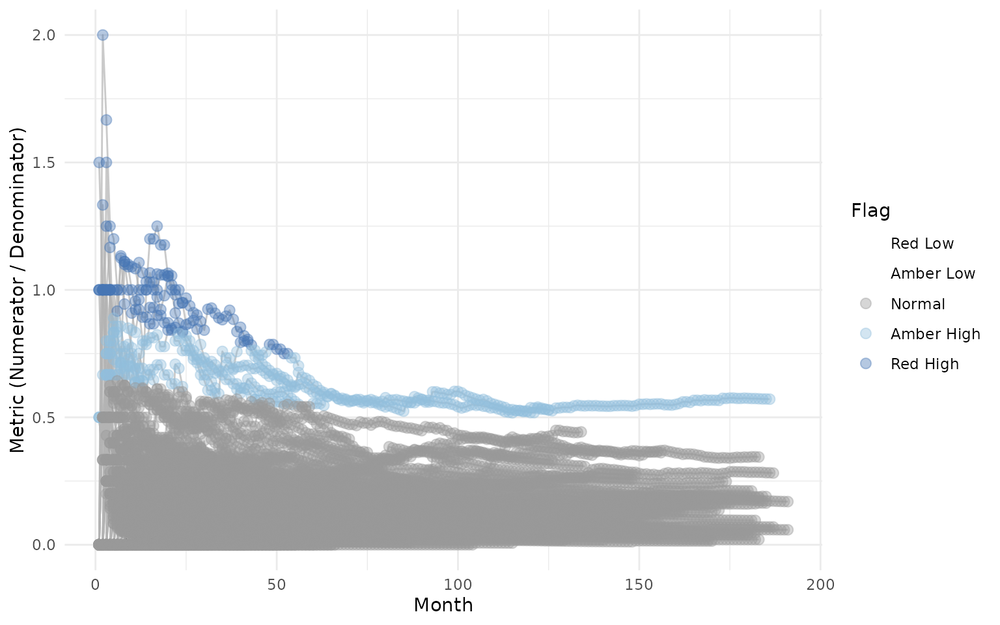
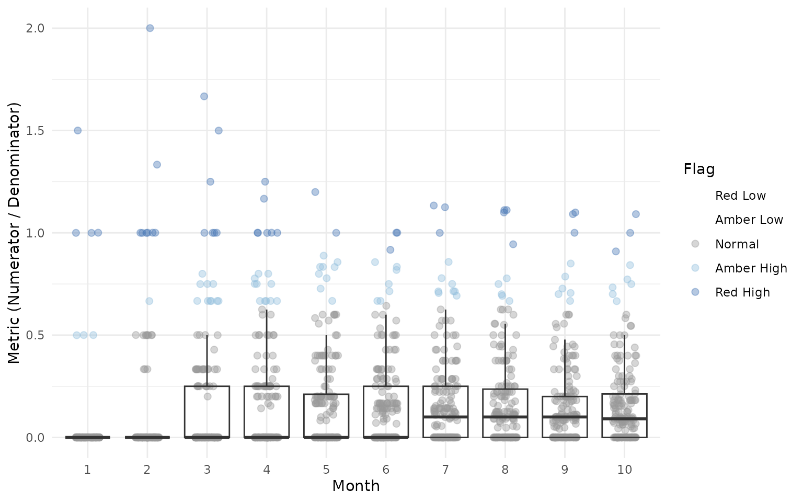

Detailed Usage and Advanced Examples
DetailedUsage.RmdThis vignette provides detailed documentation for each function in
gsm.timez, including parameter descriptions, output
columns, and advanced usage examples.
Data Preparation
We’ll use sample clinical trial data from the clindata
package to demonstrate the functions. The key datasets are: -
rawplus_dm: Subject demographics with site assignments -
rawplus_ae: Adverse event records with dates -
rawplus_visdt: Visit date records
# Load subject data
dfSubjects <- clindata::rawplus_dm
# Load adverse events (numerator)
dfNumerator <- clindata::rawplus_ae
# Load visit dates (denominator) - convert to Date type
dfDenominator <- clindata::rawplus_visdt %>%
dplyr::mutate(visit_dt = as.Date(visit_dt, "%Y-%m-%d"))Let’s preview each dataset:
# Subjects: key columns are subjid (subject ID) and siteid (site/group)
knitr::kable(head(dfSubjects[, c("subjid", "siteid", "studyid")], 5))| subjid | siteid | studyid |
|---|---|---|
| 0496 | 5 | AA-AA-000-0000 |
| 1350 | 78 | AA-AA-000-0000 |
| 0539 | 139 | AA-AA-000-0000 |
| 0329 | 162 | AA-AA-000-0000 |
| 0429 | 29 | AA-AA-000-0000 |
# Numerator (AEs): key columns are subjid and aest_dt (AE start date)
knitr::kable(head(dfNumerator[, c("subjid", "aest_dt")], 5))| subjid | aest_dt |
|---|---|
| 0496 | 2015-01-10 |
| 0496 | 2014-02-28 |
| 1350 | 2017-11-13 |
| 1350 | 2017-11-19 |
| 1350 | 2019-03-26 |
# Denominator (Visits): key columns are subjid and visit_dt (visit date)
knitr::kable(head(dfDenominator[, c("subjid", "visit_dt")], 5))| subjid | visit_dt |
|---|---|
| 0496 | 2013-11-26 |
| 0496 | 2015-03-27 |
| 0496 | 2014-10-10 |
| 0496 | 2014-09-14 |
| 0496 | 2014-02-05 |
Timeline Function
The Timeline() function generates a site-level timeline
of cumulative numerator events over sequential months.
Parameters
-
dfSubjects: Data frame with subject IDs and grouping variables -
dfNumerator: Data frame with event records (numerator) -
dfDenominator: Data frame with time point records (denominator) -
strGroupCol: Column name for grouping (e.g., “siteid”) -
strSubjectCol: Column name for subject ID -
strNumeratorDateCol: Date column in numerator data -
strDenominatorDateCol: Date column in denominator data
Basic Usage
dfTimeline <- gsm.timez::Timeline(
dfSubjects = dfSubjects,
dfNumerator = dfNumerator,
dfDenominator = dfDenominator,
strGroupCol = "siteid",
strSubjectCol = "subjid",
strNumeratorDateCol = "aest_dt",
strDenominatorDateCol = "visit_dt"
)
knitr::kable(head(dfTimeline))| GroupID | GroupLevel | Numerator | Denominator | DenominatorMonth | NMonth |
|---|---|---|---|---|---|
| 10 | siteid | 0 | 1 | 2004-01-01 | 1 |
| 10 | siteid | 0 | 1 | 2004-02-01 | 2 |
| 10 | siteid | 0 | 2 | 2004-03-01 | 3 |
| 10 | siteid | 2 | 3 | 2004-04-01 | 4 |
| 10 | siteid | 2 | 5 | 2004-05-01 | 5 |
| 10 | siteid | 2 | 7 | 2004-06-01 | 6 |
Output Columns
The Timeline output contains one row per site-month combination. Column names follow GSM standard PascalCase conventions:
-
GroupID: Group identifier (e.g., site ID) -
GroupLevel: Name of the grouping column used -
Numerator: Cumulative count of numerator events (e.g., AEs) at the site -
Denominator: Cumulative count of visits at the site -
DenominatorMonth: The calendar month (Date, truncated to first of month) -
NMonth: Sequential month index for the site (1, 2, 3, …). This is the site’s “study month” - the first month with data is 1, the second is 2, etc.
TimeZScore Function
The TimeZScore() function takes the output from
Timeline() and calculates cumulative z-scores for each row
using an expanding window indexed by month.
The z-score formula is:
Where Metrics includes all Metric values from all groups
where NMonth <= current_NMonth. This means:
- For month 1: z-scores are calculated using all Metrics from month 1
- For month 2: z-scores are calculated using all Metrics from months 1 and 2
- And so on…
If fewer than 2 Metrics exist in the cumulative window, the Score is 0.
Basic Usage
The function is designed to work seamlessly with
Timeline() output using the pipe operator:
dfTimeZScore <- gsm.timez::TimeZScore(dfTimeline)
knitr::kable(head(dfTimeZScore))| GroupID | GroupLevel | Numerator | Denominator | DenominatorMonth | NMonth | Metric | Score |
|---|---|---|---|---|---|---|---|
| 10 | siteid | 0 | 1 | 2004-01-01 | 1 | 0.0000000 | -0.1873328 |
| 10 | siteid | 0 | 1 | 2004-02-01 | 2 | 0.0000000 | -0.2544023 |
| 10 | siteid | 0 | 2 | 2004-03-01 | 3 | 0.0000000 | -0.3358909 |
| 10 | siteid | 2 | 3 | 2004-04-01 | 4 | 0.6666667 | 2.0841986 |
| 10 | siteid | 2 | 5 | 2004-05-01 | 5 | 0.4000000 | 1.0551425 |
| 10 | siteid | 2 | 7 | 2004-06-01 | 6 | 0.2857143 | 0.6111962 |
Flag Function
The Flag() function adds a Flag column
identifying statistical outliers based on z-score thresholds:
dfFlagged <- gsm.timez::Flag(dfTimeZScore)
#> ℹ Sorted dfFlagged using custom Flag order: 2.Sorted dfFlagged using custom Flag order: -2.Sorted dfFlagged using custom Flag order: 1.Sorted dfFlagged using custom Flag order: -1.Sorted dfFlagged using custom Flag order: 0.
knitr::kable(head(dfFlagged))| GroupID | GroupLevel | Numerator | Denominator | DenominatorMonth | NMonth | Metric | Score | Flag |
|---|---|---|---|---|---|---|---|---|
| 103 | siteid | 5 | 5 | 2008-07-01 | 5 | 1.00 | 3.321056 | 2 |
| 104 | siteid | 1 | 1 | 2005-02-01 | 1 | 1.00 | 5.307763 | 2 |
| 104 | siteid | 1 | 1 | 2005-03-01 | 2 | 1.00 | 4.009864 | 2 |
| 112 | siteid | 3 | 3 | 2008-12-01 | 2 | 1.00 | 4.009864 | 2 |
| 112 | siteid | 5 | 4 | 2009-01-01 | 3 | 1.25 | 4.482167 | 2 |
| 112 | siteid | 5 | 5 | 2009-02-01 | 4 | 1.00 | 3.328936 | 2 |
Visualize Function
The Visualize() function creates a line plot showing
each site’s metric over time, with dots colored by flag value:
gsm.timez::Visualize(dfFlagged)
VisualizeBoxplot Function
The VisualizeBoxplot() function creates a boxplot
showing the distribution of Metric values for each month, with
individual points colored by flag value. Points are rendered behind the
boxplots with reduced opacity (alpha=0.4):
# Show only first 10 months for clarity
gsm.timez::VisualizeBoxplot(dfFlagged, nMonths = 1:10)
Advanced Usage
Using Different Grouping Levels
The strGroupCol parameter allows you to analyze data at
different levels. For example, you could group by country instead of
site:
# Group by country instead of site
dfTimelineByCountry <- gsm.timez::Timeline(
dfSubjects = dfSubjects,
dfNumerator = dfNumerator,
dfDenominator = dfDenominator,
strGroupCol = "country",
strSubjectCol = "subjid",
strNumeratorDateCol = "aest_dt",
strDenominatorDateCol = "visit_dt"
)Integration with GSM Workflow System
gsm.timez can be used with the GSM YAML workflow system.
Workflow files are located in inst/workflow/2_metrics/:
library(gsm.core)
library(gsm.mapping)
# Step 1: Load raw data
lRaw <- list(
Raw_SUBJ = clindata::rawplus_dm,
Raw_AE = clindata::rawplus_ae,
Raw_VISIT = clindata::rawplus_visdt
)
# Step 2: Run mapping workflows
mapping_wf <- MakeWorkflowList(
strPath = system.file("workflow/1_mappings", package = "gsm.mapping")
)
spec <- CombineSpecs(mapping_wf)
lIngest <- Ingest(lRaw, spec)
lMapped <- RunWorkflows(mapping_wf, lIngest)
# Step 3: Run gsm.timez metric workflows
metrics_wf <- MakeWorkflowList(
strPath = system.file("workflow/2_metrics", package = "gsm.timez")
)
lResults <- RunWorkflows(metrics_wf, lMapped)Working with Custom Data Sources
When working with data that doesn’t follow the clindata
structure, ensure your data frames contain the required columns:
dfSubjects must contain: - A subject ID column
(specified by strSubjectCol) - A grouping column (specified
by strGroupCol)
dfNumerator must contain: - A subject ID column
(same as strSubjectCol) - A date column (specified by
strNumeratorDateCol)
dfDenominator must contain: - A subject ID column
(same as strSubjectCol) - A date column (specified by
strDenominatorDateCol)
# Example with custom column names
my_subjects <- data.frame(
patient_id = c("P001", "P002", "P003"),
site = c("Site_A", "Site_A", "Site_B")
)
my_events <- data.frame(
patient_id = c("P001", "P001", "P002"),
event_date = as.Date(c("2024-01-15", "2024-02-20", "2024-01-10"))
)
my_visits <- data.frame(
patient_id = c("P001", "P002", "P003"),
visit_date = as.Date(c("2024-01-01", "2024-01-05", "2024-01-08"))
)
# Use custom column names
dfTimeline <- gsm.timez::Timeline(
dfSubjects = my_subjects,
dfNumerator = my_events,
dfDenominator = my_visits,
strGroupCol = "site",
strSubjectCol = "patient_id",
strNumeratorDateCol = "event_date",
strDenominatorDateCol = "visit_date"
)Complete Workflow
The full pipeline from raw data to visualization:
gsm.timez::Timeline(
dfSubjects = dfSubjects,
dfNumerator = dfNumerator,
dfDenominator = dfDenominator,
strGroupCol = "siteid",
strSubjectCol = "subjid",
strNumeratorDateCol = "aest_dt",
strDenominatorDateCol = "visit_dt"
) %>%
gsm.timez::TimeZScore() %>%
gsm.timez::Flag() %>%
gsm.timez::Visualize()